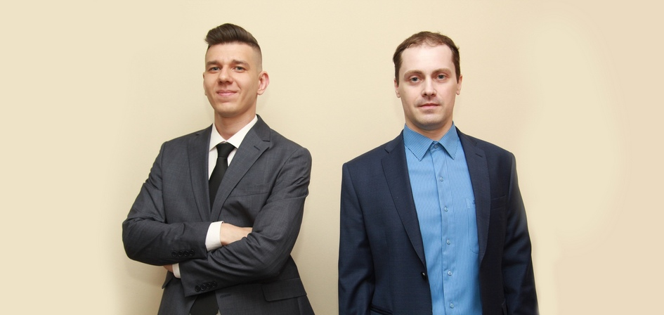

Физики ЧелГУ посвятили свои диссертации углеродным алмазоподобным фазам и сплавам Гейслера
Новость ЧелГУ о защитах диссертаций физиков; Данил Байгутлин упомянут в связи с работой по сплавам Гейслера.
verifiedverified_media_mention
Открыть материал